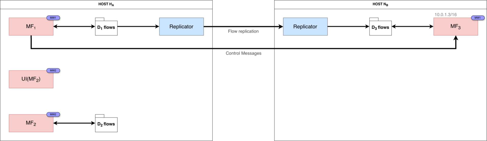

DMF Security: Assets & Requirements
(c) AMWA 2026, CC Attribution-NoDerivatives 4.0 International (CC BY-ND 4.0)
This document identifies the parts of the Dynamic Media Facility (DMF) that are relevant from a security perspective, the assets to protect, and the security requirements for those assets. It considers confidentiality (C), integrity (I), and availability (A), together with authenticity and non-repudiation (A/NR), which are especially relevant for media. See The CIA triad and supporting security properties for definitions.
System under consideration
The system under consideration comprises assets drawn from the EBU Dynamic Media Facility (DMF) Reference Architecture v2.0. A production (called a Media Workload in the reference architecture) runs across one or more Hosts: the machines in a Cluster that run the Container Platform. Each Host executes one or more Media Functions, stateless containerised units that process media, such as mixing, graphics, or format conversion.
Media Functions are granted access to Domains, which define which Flows they may access. Within a Domain, Flows carry timestamped media payloads (Grains) between authorised Media Functions. Replicators propagate Flows between Nodes in a Cluster.

Figure 1 — System under consideration.
The reference architecture describes a zero-trust model based on authentication, authorisation and accounting, least-privilege access, segmentation, and continuous monitoring. It leaves two security points open: whether media payloads must be encrypted, and how security should be handled across multiple Clusters.
Assets
The first table lists assets in the reference architecture. The second lists additional assets assumed to be part of a future DMF.
| Asset | Description | C | I | A | A/NR |
|---|---|---|---|---|---|
| Host | Runs an operating system and is grouped into a Cluster. Kubernetes uses the term “Node” for a Host. A Host executes Media Functions. | ✓ | ✓ | ✓ | ✓ |
| Media Workload | An organised collection of Media Functions and the Flows that connect them, working together to transform inputs into a Media Product. | ✓ | ✓ | ✓ | ✓ |
| Media Function | A stateless processing unit that performs an operation on media, such as format conversion, mixing, colour correction, or graphics rendering. It is provisioned as one or more Containers. | ✓ | ✓ | ✓ | ✓ |
| Domain | A Media Exchange layer mechanism that identifies which Flows Media Functions may access. In the MXL SDK, a Flow is addressed by the tuple {Host ID, Domain ID, Flow ID}, which uniquely identifies a directory of memory-mapped files holding Grains. | (✓) | ✓ | ✓ | ✓ |
| Flows | Audio, video, ancillary data, and associated metadata transported by MXL. | (✓) | ✓ | ✓ | ✓ |
| Replicator | A service that replicates media Flows between Nodes so authorised Media Functions on different Hosts can consume the same media. | ✓ | ✓ | ✓ |
Table 1 — Assets in the reference architecture.
Assumed future assets
| Asset | Description | C | I | A | A/NR |
|---|---|---|---|---|---|
| Flow Orchestration | Management of Media Functions and Flows, including device and application configuration. | ✓ | ✓ | ✓ | ✓ |
| Production | A group of Media Workloads servicing one media production. | ✓ | ✓ | ✓ | |
| Control plane | Ability to control Media Functions and Flows, including orchestration. | ✓ | ✓ | ✓ | ✓ |
| Exposed media services | Services with ports exposed outside the DMF, such as media streams. | ✓ | ✓ | ✓ | |
| Operational interfaces | Services communicating with external user interfaces and APIs. | ✓ | ✓ | ✓ | |
| Identity | Identity and associated privileges of a human operator interacting with the system. | ✓ | ✓ | ✓ | ✓ |
| Logs | Security and operational records; source material for SIEM and other cyber-automation tools. | ✓ | ✓ | ✓ | ✓ |
Table 2 — Assumed future assets.
Security requirements
- Each entity in a DMF shall have a verifiable identity.
- Identities and credentials shall be centrally managed in a DMF.
- Authentication and authorisation shall be centrally managed in a DMF.
- Flows, Domains, control, state, logs, and monitoring information shall be protected against unauthorised access, modification, and deletion.
- Control actions shall be authenticated, authorised, attributable, and protected against replay.
- Each Media Function shall check the identity and authorisation of the source of requested actions.
- Configuration changes shall be validated, auditable, and reversible.
- Credentials, connections, permissions, and retained data shall be withdrawn or disposed of when no longer required.
- All hardware and software hosting or supporting the DMF shall be secured and hardened according to relevant best practices.
- High-impact operator actions shall include safeguards against human error.
- Availability, capacity, latency, timing, and recovery requirements shall be clearly defined, and limits shall be enforced.
- Hosts and Media Functions shall be protected against denial-of-service attacks, including resource exhaustion.
- Failures, degradation of functionality, and security-relevant changes in a DMF shall be detectable so that an automated or operator response can be triggered.
- Required security and operational events shall be logged, identifying their source and relevant subject using verifiable identities. Logs shall contain sufficient context and accurate timestamps to support correlation and investigation, but no sensitive information.
- Log collection, transport, storage, and retrieval shall meet defined availability and retention needs.
- Changes to logging and retention arrangements shall be authorised, validated, and auditable.
- Media Workload resources and relationships shall be isolated from other, unrelated Media Workloads and productions according to risk.
- Critical functions and Flows shall have defined continuity and recovery arrangements.
The CIA triad and supporting security properties
| Abbreviation | Property | Description |
|---|---|---|
| C | Confidentiality | Preserving authorised restrictions on information access and disclosure, including protecting personal privacy and proprietary information. |
| I | Integrity | Guarding against improper information modification or destruction, including ensuring authenticity and non-repudiation. |
| A | Availability | Ensuring timely and reliable access to and use of information; timeliness is particularly critical for real-time media production. |
| A/NR | Authenticity | The assurance that an entity, user, system, or data is genuine and has not been impersonated or falsified. |
| Non-repudiation | The assurance that the origin and integrity of data or an action can be proven, preventing an individual or entity from falsely denying having performed that action. |
Table 3 — The CIA triad and supporting security properties.
References
- The Dynamic Media Facility: Reference Architecture v2.0.
- MXL releases.